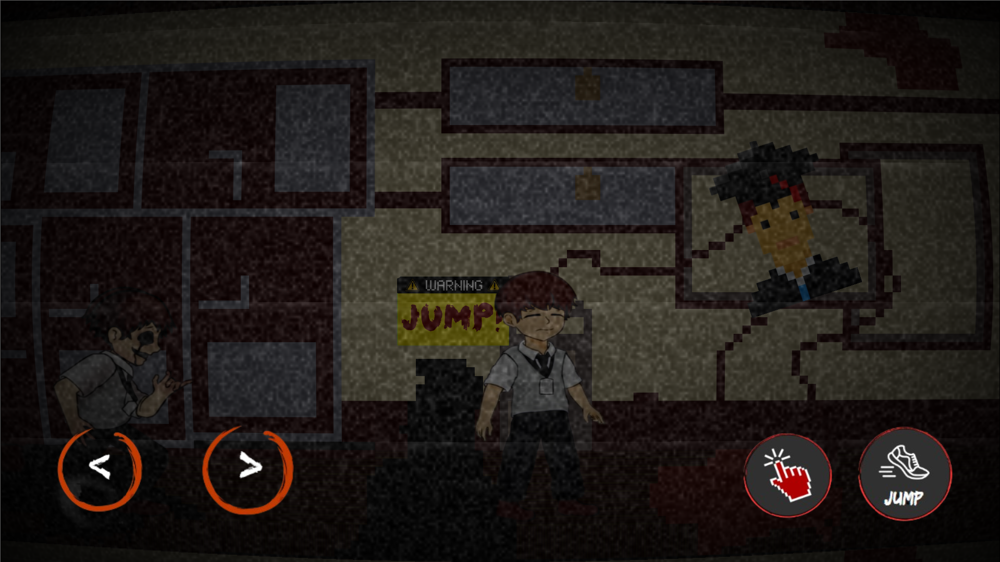

This page showcases the game development projects I have worked on as part of The Last Byte. While these projects were created through teamwork, I served as the Lead Developer and was the major contributor, leading the programming, implementing core gameplay mechanics, and coordinating the overall development process. These projects reflect my passion for creating engaging games and continuously improving my skills with the Godot Engine.

GODOT
ALTER is a 2D side-scrolling horror game developed using the Godot Engine. Players explore a dark and mysterious environment, solve puzzles, and collect important items such as keys, codes, and clocks to progress through the game. Designed with suspenseful visuals and immersive gameplay, ALTER focuses on creating a thrilling horror experience while showcasing my skills in game development using Godot and GDScript.
Open Project